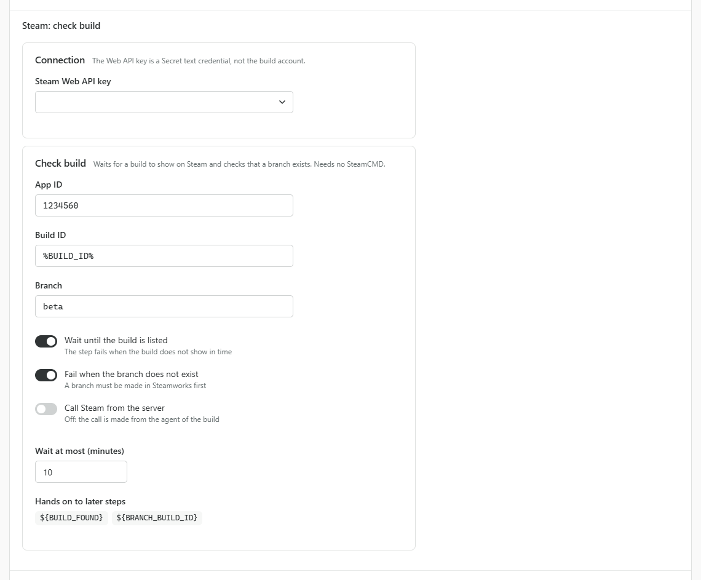

Steam: check build
Wait until Steam lists your uploaded build, and check that a branch exists.
When to use it
Use it between Steam upload and Steam: set branch live. Steam can take a moment to list a new build, and setting a build live on a branch that does not exist fails. This step needs no SteamCMD. It calls Steam's Web API.
How to set it up
- Add a Secret text credential that holds your publisher Steam Web API key. See Credentials.
- Open the build configuration and go to Settings › Build steps › Add build step › Steam: check build.
- Choose the Steam Web API key.
- Type the App ID and the Branch. Leave Build ID on
%BUILD_ID%to check the build of the earlier upload step. - Click Save.

Every field
| Field | What it does | Default | Example |
|---|---|---|---|
| Steam Web API key | A Secret text credential with the key. It is not the build account. | None | steam-web-key |
| App ID | Your app number. | None | 1000480 |
| Build ID | The build to look for. Must be a number once parameters are filled in. | %BUILD_ID% | %BUILD_ID% |
| Branch | The branch that must exist. | Empty | nightly |
| Wait until the build is listed | The step fails when the build does not show in time. | On | On |
| Fail when the branch does not exist | A branch must be made in Steamworks first. | On | On |
| Call Steam from the server | Off: the call is made from the agent of the build. On: from the Buildspawn server. | Off | Off |
| Wait at most (minutes) | How long to wait for the build to be listed. | 10 | 10 |
| Hands on to later steps | The values it sets: BUILD_FOUND and BRANCH_BUILD_ID (the build that is live on the branch). | Not editable |
A worked example
After uploading build 15870342 for app 1000480, check branch nightly with the default wait of 10 minutes. When it passes, your tests run, and then Set branch live publishes the build.
What you see when it runs
- Build 15870342 is not in the list of builds yet. Waiting. repeated until Steam lists it.
- the branch nightly exists. The key is shown as
********.
Problems and fixes
| Message | What to do |
|---|---|
| No Steam Web API key is chosen / The Web API key … does not exist, or this job may not use it | Choose a Secret text credential the build configuration may use. |
| The build ID … is missing or is not a number | An earlier upload step must set BUILD_ID. A preview upload gives none. |
| Build … did not show in the list of builds within … minutes | Raise Wait at most (minutes), and check the App ID. |
| the branch … does not exist | Create it on the Builds page in Steamworks, or turn off Fail when the branch does not exist. |
| Steam answered … | Steam refused the call. The text after it is Steam's answer. Check the key and the App ID. |